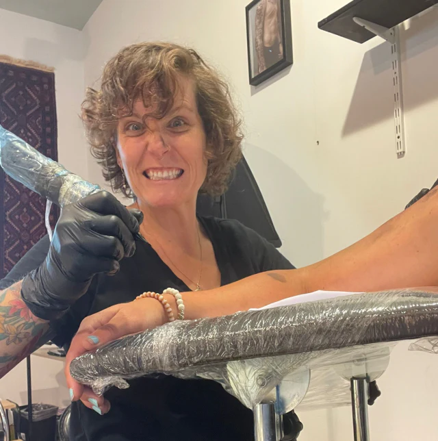

Amy Jane van den Bergh · Netherlands
Your story.
But in ink.
Bold colour, fine lines and seriously personal tattoos—thoughtfully drawn for wonderfully individual humans.

Artist
tattooist
printmaker
Hi, I'm AJ.
I'm a multidisciplinary artist, tattooist and screenprinter based in the Netherlands. My work is inspired by nostalgia, nature, and your personal stories.
I love creating designs that capture the meaning and symbolism you want, blending bold colour with my illustrative style. Whether this is your first tattoo or you're adding to your collection, my goal is to make the experience just as enjoyable as the tattoo itself.
Pick a circle.
Get curious.
Black & white on the outside.
Full-colour character within.
No fuss.
Just a good process.
- 01
Tell me your idea
Send the story, symbols, mood and placement you have in mind. Rough ideas are welcome.
- 02
We make it yours
We'll shape a custom design together—considered, personal and never copied from Pinterest.
- 03
Get inky
We meet by appointment, take our time, and make a tattoo that feels unmistakably yours.
Questions are very welcome.
Tattoo newcomer? Seasoned collector? Here's the short version.
How do I book?+
Start with the enquiry form below. Tell AJ your idea, approximate size and placement. AJ will then reach out to you for further information and design-related questions.
How much will it cost?+
Pricing depends on size, placement, detail and time. AJ will confirm a quote once the idea is clear. We charge a standard rate of €100 per hour.
Will it hurt?+
Probably a bit—everyone and every placement is different. AJ will talk you through the experience and help you feel at ease.
Do you create custom designs?+
Yes. Collaboration is the whole point: your story and aesthetics, translated through AJ's illustrative art practice.
Where are you based?+
AJ works in the Netherlands by appointment. Her studio is mobile, and her clients often opt for at-home appointments for a more personal and relaxed experience.
What about consent?+
Download the draft consent form (PDF). This is a review copy to read before your appointment; no consent or health information is collected by this website.
What about aftercare?+
AJ recommends using a second skin, which she provides and applies for you after the tattoo. The second skin is removed after five days, and then light daily cleaning and moisturising are recommended.
A few tips:
- No swimming or bathing until the tattoo is completely healed: approximately two weeks.
- Avoid sport that causes excessive sweating while your tattoo is healing.
- Avoid the sun while your tattoo is healing.
- If your tattoo is itchy, do not scratch.
- Do not cover your tattoo in any bandages or coatings unless prescribed by AJ or a doctor.
- Once your tattoo is healed, invest in good sunscreen to prevent sun damage and premature ageing.
- The less fuss you give your tattoo, the better it will heal.
Ink for your walls.
Art you can wear.
When AJ is not tattooing, she is creating screenprints for your walls and your wardrobe. Wear an AJ tee to your next tattoo appointment and get 10% off your tattoo.
2026
Got an idea
under your skin?
Tell AJ about it. Weird, wonderful and half-formed ideas all belong here.
inky.amyjane@gmail.comWhatsApp AJ: 06 1780 5417@inky.amyjane